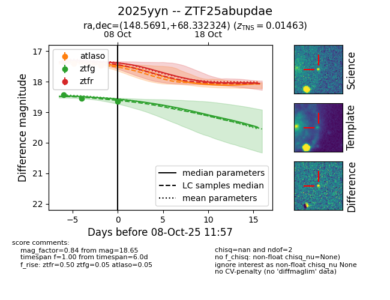
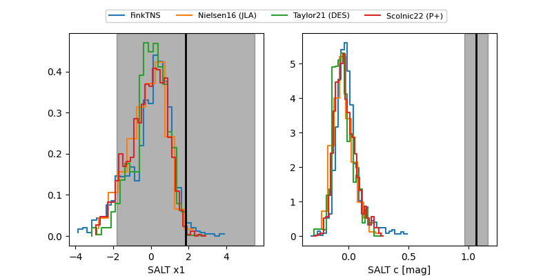

FINK: ZTF25abupdae
Lasair: ZTF25abupdae
ALeRCE: ZTF25abupdae
TNS: 2025yyn
YSE: 2025yyn
ZTF25abupdae (ztf,fink)
2025yyn (tns,yse)
equatorial (ra, dec) = (148.5691,+68.33232)
galactic (l, b) = (142.9784,+41.22229)


last atlaso=17.47, ztfg=18.65, ztfr=17.36
2 atlaso, 3 ztfg, 1 ztfr detections